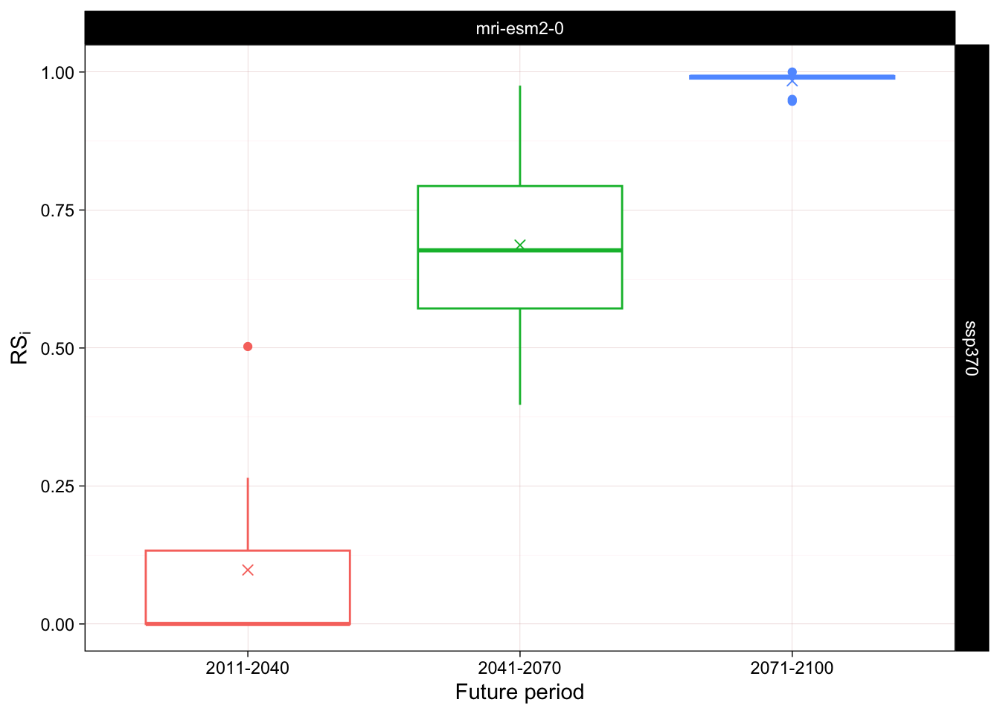
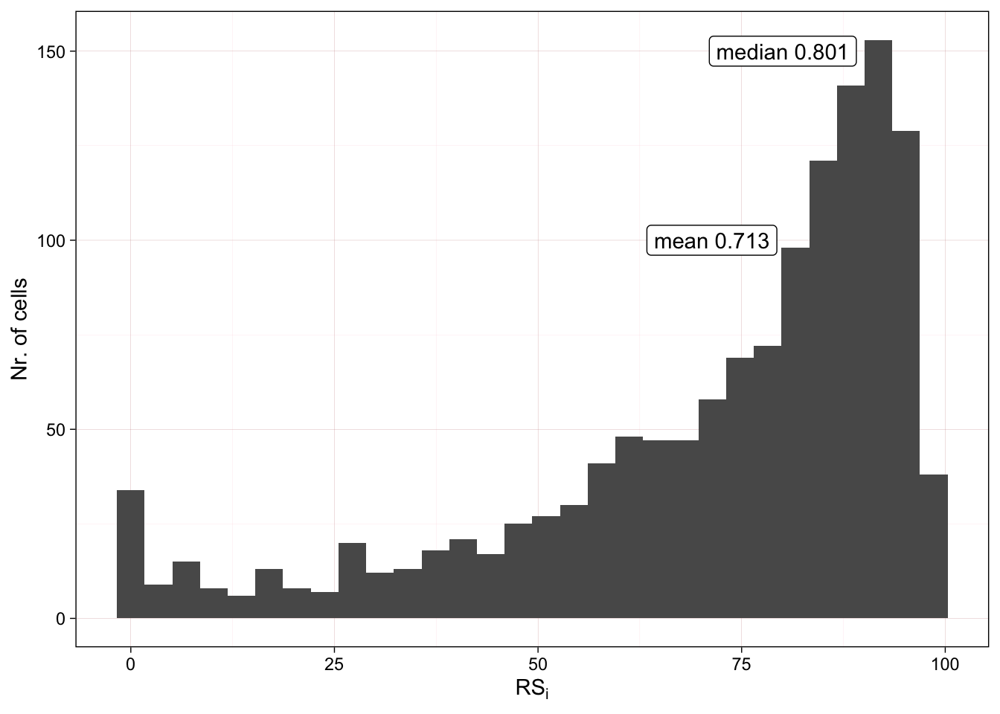
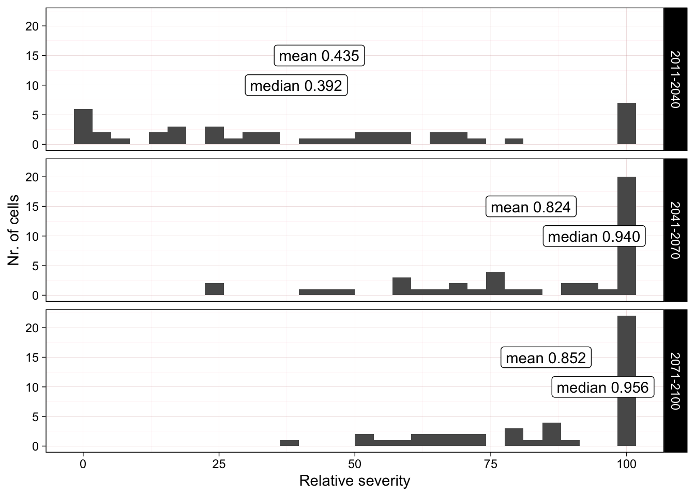
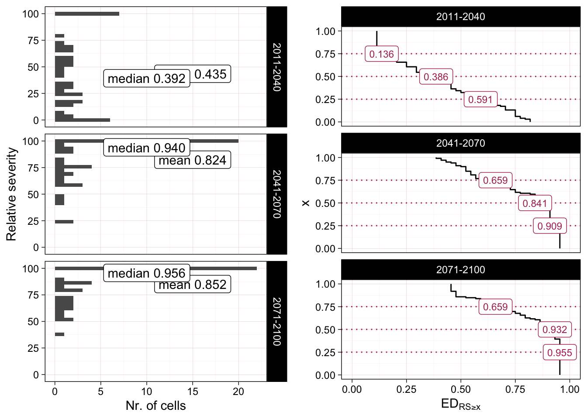
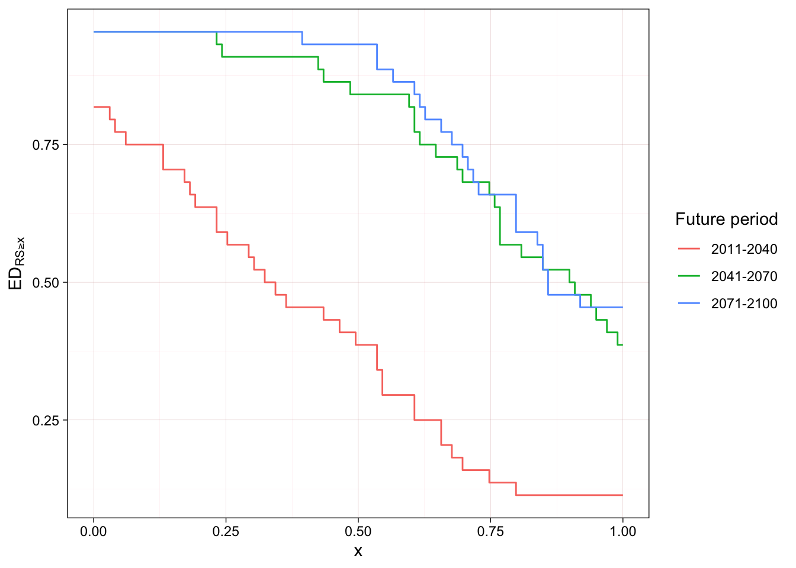
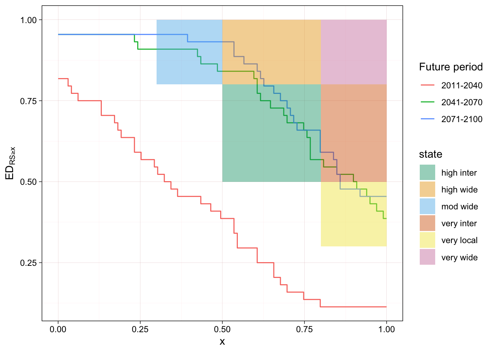

We can use the average RS to describe the overall magnitude of decline, but the values of relative severity vary across any sample of sites or locations.
Degradation can be considered a threat to an ecosystem if it is widespread and/or severe in its intensity. Thus moderate values of relative severity across a large extent or high values of relative severity in a moderate extent of the ecosystem distribution could produce similar level of threat.
For the purpose of describing these patterns of degradation, we calculate extent of decline, or more precisely, the cumulative extent of decline (\(\mathrm{cED}\)), as the proportion of the distribution of an assessment unit that has values of relative severity higher than a threshold \(x\).
We will look at the calculation of (\(\mathrm{cED}\)) for the two indicator variables and the relationship between RS and extent of decline through time.
6.1 Motivation: Variability in \(\mathrm{RS}_{i}\) values
Loss of ice mass in Kilimanjaro
Given the nature of ice mass as a prediction of a physical measure, we need to weight the RS values of individual glacier outlines.
If we look at the example of the T.G.E. Kilimanjaro, for one combination of model and scenario and the year 2040, we have following values of \(\mathrm{RS}_{i}\):
Sites with high RS but low initial ice mass will contribute less to the average RS, but nonetheless indicate localised high rates of degradation.
Decline in bioclimatic suitability
In the case of the bioclimatic suitability model we are using spatial units with the same area and the index of suitability is not a direct measure of physical properties of the ecosystem. Thus we use the same weights for all sites. We can calculate complementary summary statistics (e.g. median and quantiles) to represent the spatial variability in values of \(\mathrm{RS}_{i}\) in an assessment unit.
For small assessment units the spatial sample size for the calculation of \(\mathrm{RS}_{i}\) is small and values tend to be relatively similar. Differences can be visualised conveniently with boxplots.

Figure 6.1: Box and whisker plots of the \(RS_{bcs}^{acc}\) values for the Tropical Glacier Ecosystem of Ruwenzori. The middle line represent the location of the median and the box include the distribution from first to third quartile, the location of the mean (equal to \(\overline{\mathrm{RS}}\)) is marked with an X symbol.
For larger sampling units we can see more complex distributions of \(\mathrm{RS}_{i}\) values. In the case of the Cordilleras Norte de Peru we have more than thousand raster cells with values of relative severity. Histograms of the relative severity values show a wide spread of value in one selected future period, with most cell in the 75 - 100 % interval, but still many cell in the lowest quartile. This is reflected in the difference between mean and median RS values.

Figure 6.2: Histogram of the \(RS_{cor}\) values for the Tropical Glacier Ecosystem of the Cordilleras Norte de Peru using the maximum accuracy threshold.
6.2 The Cumulative Extent of Decline
The cumulative extent of Decline can be calculated as follows: \[
\mathrm{cED}(x) = \frac{\sum \begin{cases}
w_{i}, & \text{if}\ \mathrm{RS}_{i} ≥ x\\
0, & \text{if}\ \mathrm{RS}_{i} < x \\
\end{cases}}{\sum_{i=1}^{n} w_{i}}
\]
using the values of \(\mathrm{RS}_{i}\) and \(w_i\) defined before.
cED for decline in ice mass
We can use these values to calculate \(ED_{RS≥x}\) as a weighed empirical distribution function:
We can use a similar approach to calculate the value of \(cED\) for the decline in bioclimatic suitability.
We use the data from T.G.E. of Ecuador for one combination of model and scenario and compare three future periods.
The shape of the histogram changes in time, with an initial increase followed by a slight decrease in mean and median values.

Figure 6.3: Histogram of the \(RS_{cor}\) values for the Tropical Glacier Ecosystem of Cordilleras de Colombia using the maximum accuracy threshold.
Although there is now a large number of cell with very high values of relative severity, this still does not represent a majority of the extent of the ecosystem. We can use an alternative visualisation to make this more explicit:
we will first flip the coordinates of the histogram,
then count the cummulative number of cells starting with the highest relative severity values,
we express this value as a propotion of the total extent of the assessment unit.
In this version we have flipped the coordinates of the plot used above for the ice mass of Kilimanjaro

Figure 6.4: Comparing the histogram of the \(RS_{cor}\) values with a modified empirical cumulative distriution function for the Tropical Glacier Ecosystem of Cordilleras de Colombia using the maximum accuracy threshold.
This arrangement allows to read the cummulative extent by different thresholds of relative severity. For example, there ecosystem extent with \(RS ≥ 0.75\) increases from less than 40% in the first period to more than 50 %, and the extent with \(RS ≥ 0.25\) increases from nearly 65% to almost 75%.
\(\mathrm{AUC}_{\mathit{cED}}\) for loss of ice mass
When we calculate \(cED_{x}\) for multiple years we can see a change in the shape of the curve.
d <- RSvals %>%filter(year %in%c(2040,2070,2100))EDs <- d %>%group_by(year) %>%group_modify( ~cED_w(RS=.x$RS,weights=.x$w))ggplot(EDs) +geom_step(aes(x=x, y=ED, group=year,colour=factor(year))) +ylab(expression(ED[RS>=x])) +ylim(0,1)+xlab("x")
This figure shows a large increase in values of \(RS≥0.5\) between 2040 and 2070 and then an increase of values of \(RS≥0.75\) between 2070 and 2100.
\(\mathrm{AUC}_{\mathit{cED}}\) for decline in suitability
We can flip the coordinates and collapse the panels to actually superinpose these curves for a quick overview of the increase in extent for each value of relative severity :

Figure 6.5: Comparison of the modified empirical cumulative distribution function of the \(RS_{cor}\) values for the Tropical Glacier Ecosystem of Cordilleras de Colombia .
We see that for this combination of model, scenario and threshold, there is an increase in the extent of high severity values between the first and second period, but the distribution does not change much between the second and third period.

Figure 6.6: Comparison of the modified empirical cumulative distribution function of the \(RS_{cor}\) values for the Tropical Glacier Ecosystem of Cordilleras de Colombia .